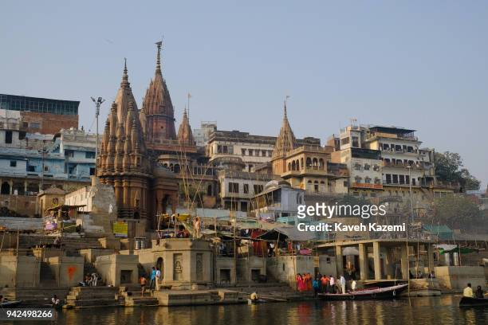

Home
Home
 Explore
Explore
 Messages
Messages
35m
अभी अभी : #Gaza शहर का ड्रोन फुटेज।
123,000 से अधिक लोग विस्थापित, सैकड़ों अपार्टमेंट और घर ध्वस्त।
@IDF ने बताया है कि उन्होंने पिछले तीन दिनों में 130 लक्ष्यों को नष्ट कर दिया है।
#Hamas महिलाओं और बच्चों समेत निर्दोष लोगों को मानव ढाल के रूप में इस्तेमाल करने के लिए जाना जाता है।
#Israel_under_attack #IStandWithIsrael #IsraelPalestineWar
2h
ओलिंपिक में भारत को स्वर्ण पदक दिलाने वाले खिलाड़ी नीरज चोपड़ा (@Neeraj_chopra1) का आज है जन्मदिन!
हमारे साथ आप भी उन्हें दें बधाई!
#HappyBirthday #neerajchopra #olympics #ATCard


Dec 22
Worlds 2nd largest Hindu temple being inaugurated at Robinsville, NJ, USA.

6h
Captured in incredible detail by
@NASAHubble's Wide Field Camera 3, this photo features a spiral galaxy some 120 million light-years from Earth:
https://go.nasa.gov/3Er4IOx

9h
VARANASI, INDIA - JANUARY 29, 2018: Old temples are seen on the banks of Ganga
(Ganges) River where people bathe and enjoy a boat ride on January 29,
2018 in Varanasi, India. Varanasi is a major religious hub in India,
it is the holiest of the seven sacred cities in Hinduism Varanasi is a city in the northern
Indian state of Uttar Pradesh dating to the 11th century B.C.

3h
If cinema is a reflection of the times we live in, this film from the UPA era is
a grim reminder of how terrorist attacks had become routine in India between 2004-14.
Our collective memories of those horrendous times may have become feeble…
What's happening
SBI wishes you a Merry Christmas
Ranveer Singh's 83 hits the theatres
#MATIC
#PoojaHegde
Y SSR Murder Is Still Mystery
Who to follow